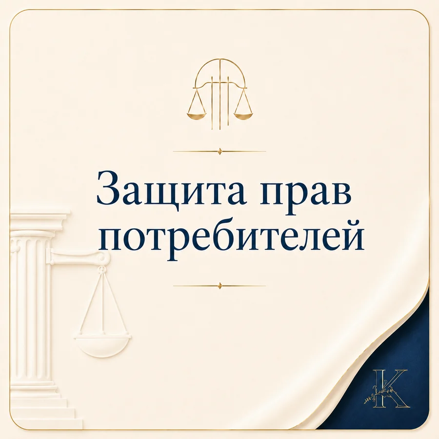
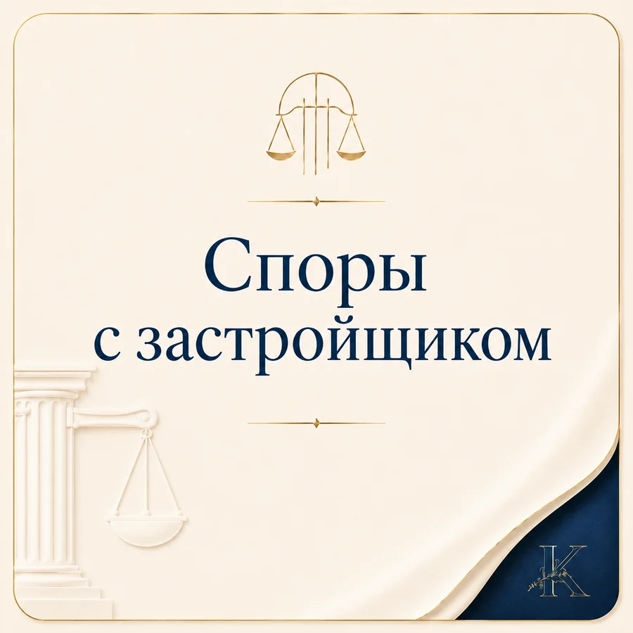
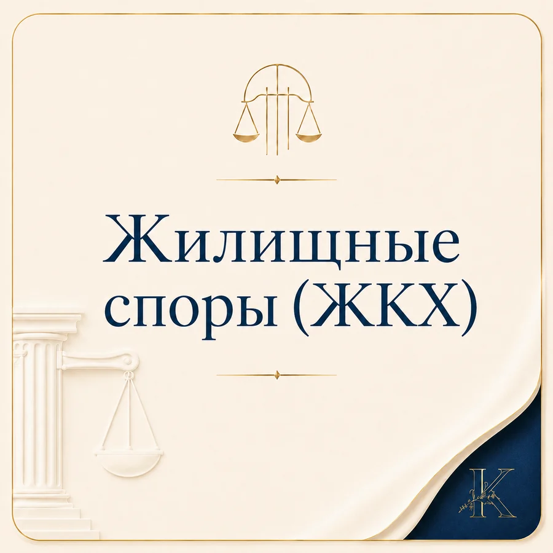
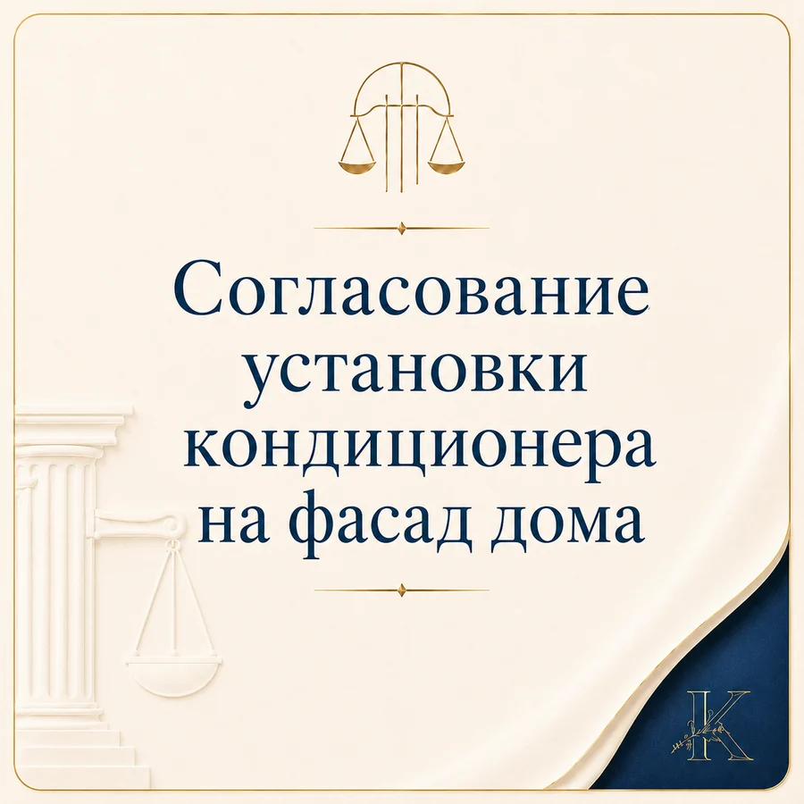
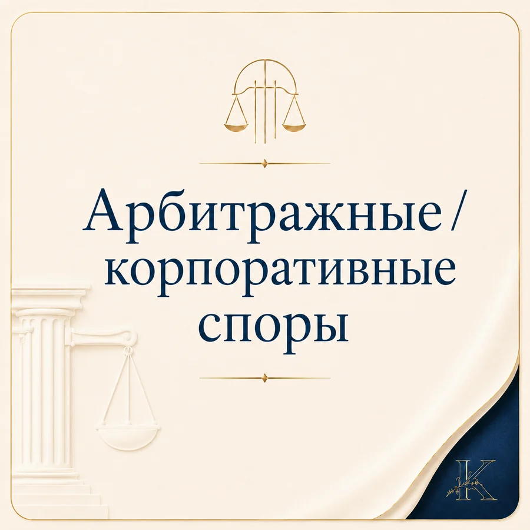

от 10 000 ₽
Трудовые споры
Увольнение, взыскания, выплаты и другие конфликты между работником и работодателем.
Санкт-Петербург · судебные и досудебные споры
Помогаю определить правовую позицию, подготовить документы и выбрать порядок действий для досудебного урегулирования или обращения в суд.
Стоимость зависит от категории спора, объёма документов и стадии дела.
Направления работы
Базовая стоимость указана по данным сообщества. Точная цена определяется после понимания категории спора, объёма документов и стадии дела.
от 10 000 ₽
Увольнение, взыскания, выплаты и другие конфликты между работником и работодателем.

от 8 000 ₽
Товары, работы и услуги: претензии, возврат денежных средств и судебная защита.
от 10 000 ₽
Проверка отказа или размера выплаты, претензия и защита интересов в споре.

от 20 000 ₽
Требования к застройщику, претензионный порядок и сопровождение судебного спора.

от 8 000 ₽
Споры по пользованию жильём, коммунальным услугам и иным жилищным вопросам.
от 10 000 ₽
Правовая оценка решений социального фонда, подготовка обращений и обжалование.

от 12 000 ₽
Юридическое сопровождение вопроса согласования установки оборудования на фасаде.

от 25 000 ₽
Анализ документов, подготовка позиции и сопровождение коммерческих конфликтов.
Порядок работы
До суда важно понимать, какие обстоятельства можно подтвердить, какие сроки действуют и что юридически достижимо. Поэтому работа начинается с анализа ситуации, а не с обещания результата.
Кратко описываете, что произошло, чего хотите добиться и какие материалы уже есть.
Определяются применимые нормы, доказательства, сроки и возможные возражения другой стороны.
Согласовывается, что целесообразно: переговоры, претензия, жалоба, иск или иной процессуальный шаг.
Подготовка необходимых документов и, при необходимости, представительство в судебном процессе.
Подход к делу
Юридическая помощь строится вокруг конкретной ситуации: фактов, документов, сроков и цели клиента.
Сначала понять перспективу и слабые места, затем выбирать способ защиты.
Без перегрузки формальностями, которые не помогают решить конкретный спор.
Итоговая цена зависит от объёма материалов и стадии, на которой находится дело.
Документы и материалы
Блок подготовлен так, чтобы позже можно было самостоятельно заменять PDF-файлы и подписи без переделки сайта.
Контакты
В первом сообщении достаточно кратко указать, что произошло, какие документы есть и какого результата вы хотите добиться.
Орбитальная, 5
Санкт-Петербург